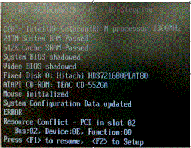
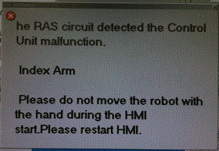
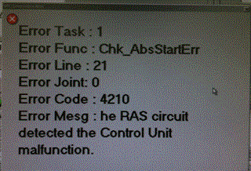

Service History
Subject: NS-8040 T-4210 - The RAS circuit detected the control unit malfunction
Handler Model: NS-8040 (NS80-26)
Controller: RC520
Date: 8 Apr 2010
Symptom
Previous errors before HDD recovery:
1) The HMI cannot launch
2) Spel also cannot launch
3) And errors appears during win 2k boot up, pls see below.

This was after we did the recovery, HMI/SPEL installation and restoring the backup data.
|
 |
 |
T4210 - The RAS circuit detected the control unit malfunction
9 Apr 2010, recovered the system with recovery disc 1.56. Restored system and pose and upgrade HMI to 2.0.
Able to clear the error and dry cycle run without problem so I release the handler to Ray.
However, customer just informed me again the error came back
Action
Suspect that it may have problem on MIB board or DMB.
If you already know which Drive Unit (DU) caused the problem, replace the affected one.
It may have affected by Input arm because of crash.
In this case, I think replaced only DU2.
Display screen during boot up show "Resource Conflict - PCI in slot 2
Bus:02, Device 0E, Function:00"
This slot 2 or Bus 02 is not related Drive Unit 2.
Need to open RC520 and see which board sit in PCI slot 2 and then resit board(eg IFUNT or PG).
Could be backplane board or CPU board or PC power supply problem also.
Also error show "Index Arm", so MIB 1 is for Index Arm. Maybe can resit/replace MIB1 in RC520.
12 Apr 2010
Checked handler BIOS settings, no problem.
Did not swap or change any parts.
Just power up the handler and dry cycle mode running at 80% speed from 1225hrs to 1615hrs, did not encounter any controller errors.
Cause
Remarks
Same "The RAS circuit detected control unit malfunction" error in 0158-NS8K.